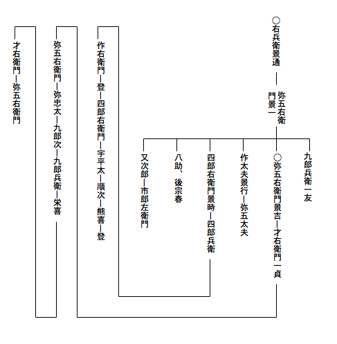

某儀明日年来の
宿望相達し
候て、
妙解院殿（松向寺殿）御墓前において
首尾よく切腹いたし
候事と相成り候。しかれば子孫のため事の
顛末書き残しおきたく、京都なる弟又次郎宅において筆を取り候。
某祖父は
興津右兵衛景通と
申候。
永正十一（十七）年
駿河国興津に生れ、
今川治部大輔殿に仕え、同国
清見が
関に住居いたし候。
永禄三年五月二十日今川殿
陣亡遊ばされ
候時、
景通も
御供いたし候。年齢四十一歳に候。
法名は
千山宗及居士と申候。
父
才八は永禄元年出生
候て、三歳にして
怙を失い、母の手に養育いたされ候て人と成り候。壮年に及びて
弥五右衛門景一と
名告り、母の族なる
播磨国の人
佐野官十郎方に寄居いたしおり候。さてその縁故をもって
赤松左兵衛督殿に仕え、
天正九年千石を給わり候。十三年四月赤松殿
阿波国を
併せ領せられ候に及びて、
景一は三百石を加増せられ、
阿波郡代となり、同国
渭津に住居いたし、
慶長の初まで勤続いたし
候。慶長五年七月赤松殿
石田三成に
荷担いたされ、
丹波国なる
小野木縫殿介とともに
丹後国田辺城を攻められ候。当時田辺城には
松向寺殿
三斎忠興公御立籠り遊ばされおり
候ところ、神君
上杉景勝を討たせ給うにより、三斎公も随従遊ばされ、
跡には
泰勝院殿幽斎藤孝公御留守遊ばされ候。景一は京都赤松殿
邸にありし時、
烏丸光広卿と
相識に相成りおり
候。これは光広卿が幽斎公和歌の御弟子にて、
嫡子光賢卿に松向寺殿の御息女
万姫君を
妻せ居られ
候故に候。さて景一光広卿を
介して御当家御父子とも御心安く相成りおり候。
田辺攻の時、関東に
御出遊ばされ候三斎公は、景一が
外戚の従弟たる森三右衛門を使に田辺へ差立てられ候。森は田辺に
着いたし、景一に面会して
御旨を伝え、景一はまた赤松家の
物頭井門亀右衛門と
謀り、田辺城の
妙庵丸櫓へ
矢文を射掛け候。翌朝景一は森を斥候の中に交ぜて陣所を出だし
遣り候。森は首尾よく城内に入り、幽斎公の御親書を得て、翌晩関東へ出立いたし候。この
歳赤松家滅亡せられ候により、景一は森の案内にて
豊前国へ参り、慶長六年御当家に
召抱えられ
候。
元和五年御当代
光尚公御誕生遊ばされ、御幼名
六丸君と申候。景一は六丸君
御附と相成り候。
元和七年三斎公御
致仕遊ばされ候時、景一も
剃髪いたし、
宗也と
名告り候。
寛永九年十二月九日御先代
妙解院殿忠利公肥後へ御入国遊ばされ候時、景一も
御供いたし候。十八年三月十七日に妙解院殿卒去遊ばされ、次いで九月二日景一も病死いたし候。
享年八十四歳に候。
兄九郎兵衛
一友は景一が嫡子にして、父につきて
豊前へ参り、慶長十七年三斎公に召しいだされ、
御次勤仰つけられ、後病気により
外様勤と相成り候。妙解院殿の
御代に至り、寛永十四年冬
島原攻の御供いたし、翌十五年二月二十七日
兼田弥一右衛門とともに、御当家
攻口の一番乗と名告り、海に臨める城壁の上にて陣亡いたし候。法名を
義心英立居士と
申候。
某は
文禄四（三）年景一が二男に生れ、幼名才助と申候。七歳の時父につきて豊前国小倉へ参り、慶長十七年十九歳にて三斎公に召しいだされ候。元和七年三斎公致仕遊ばされ候時、父も剃髪いたし
候えば、某二十八歳にて
弥五右衛門景吉と名告り、三斎公の御供いたし候て、豊前国興津に参り候。
寛永元年五月
安南船長崎に到着候時、三斎公は
御薙髪遊ばされ候てより三年目なりしが、
御茶事に
御用いなされ候珍らしき品買い求め候様
仰含められ、
相役横田清兵衛と両人にて、長崎へ出向き候。幸なる事には異なる
伽羅の大木渡来いたしおり候。
然るところその伽羅に
本木と
末木との二つありて、はるばる仙台より
差下され候
伊達権中納言殿の役人ぜひとも本木の方を取らんとし、某も同じ本木に望を掛け互にせり合い、次第に値段をつけ
上げ候。
その時横田
申候は、たとい主命なりとも、
香木は無用の
翫物に
有之、過分の大金を
擲ち
候事は
不可然、
所詮本木を伊達家に譲り、末木を買求めたき
由申候。
某申候は、某は左様には存じ申さず、主君の申つけられ候は、珍らしき品を買い求め参れとの事なるに、このたび渡来
候品の中にて、第一の珍物はかの伽羅に有之、その木に本末あれば、本木の方が
尤物中の尤物たること
勿論なり、それを手に入れてこそ主命を果すに当るべけれ、
伊達家の伊達を増長
致させ、本木を譲り
候ては、細川家の
流を
涜す事と相成り申すべくと申
候。横田
嘲笑いて、それは
力瘤の入れどころが相違せり、一国一城を取るか
遣るかと申す場合ならば、
飽くまで伊達家に
楯をつくがよろしからん、高が四畳半の
炉にくべらるる木の切れならずや、それに大金を
棄てんこと存じも寄らず、主君御自身にてせり合われ
候わば、臣下として
諫め
止め申すべき
儀なり、たとい主君がしいて本木を手に入れたく
思召されんとも、それを遂げさせ申す事、
阿諛便佞の
所為なるべしと申
候。当時三十一歳の
某、この
詞を聞きて立腹致し候えども、なお忍んで申候は、それはいかにも賢人らしき
申条なり、さりながら某はただ主命と
申物が大切なるにて、主君あの城を落せと
仰せられ候わば、鉄壁なりとも乗り取り申すべく、あの首を取れと仰せられ候わば、鬼神なりとも討ち果たし申すべくと同じく、珍らしき品を求め参れと仰せられ候えば、この上なき名物を求めん所存なり、主命たる以上は、人倫の道に
悖り候事は格別、その事柄に立入り候批判がましき儀は無用なりと申候。横田いよいよ
嘲笑いて、お手前とてもその通り道に
悖りたる事はせぬと申さるるにあらずや、これが武具などならば、大金に
代うとも惜しからじ、香木に不相応なる
価をいださんとせらるるは
若輩の心得ちがいなりと申候。某申候は、武具と香木との相違は某若輩ながら心得居る、
泰勝院殿の
御代に、
蒲生殿申され
候は、細川家には結構なる御道具あまた
有之由なれば拝見に
罷出ずべしとの事なり、さて約束せられし当日に相成り、蒲生殿参られ
候に、泰勝院殿は
甲冑刀剣
弓鎗の類を
陳ねて御見せなされ、蒲生殿意外に
思されながら、一応御覧あり、さて実は茶器拝見致したく参上したる次第なりと申され、泰勝院殿御笑いなされ、先きには道具と
仰せられ候故、武家の表道具を御覧に入れたり、茶器ならば、それも少々持合せ候とて、はじめて
御取り
出しなされし由、御当家におかせられては、代々武道の御心掛深くおわしまし、かたがた歌道茶事までも
堪能に渡らせらるるが、天下に比類なき所ならずや、茶儀は無用の虚礼なりと申さば、国家の大礼、先祖の
祭祀も
総て虚礼なるべし、
我等この
度仰を受けたるは茶事に御用に立つべき珍らしき品を求むる
外他事なし、これが主命なれば、身命に
懸けても果さでは相成らず、貴殿が香木に大金を出す事不相応なりと思され
候は、その道の御心得なき
故、一徹に左様思わるるならんと申候。横田聞きも果てず、いかにも某は茶事の心得なし、一徹なる
武辺者なり、諸芸に堪能なるお手前の表芸が見たしと申すや否や、つと立ち上がり、
脇差を抜きて投げつけ候。某は身をかわして
避け、刀は
違棚の下なる刀掛に掛けありし故、飛びしざりて刀を取り抜き合せ、ただ一打に横田を討ち果たし候。
かくて某は即時に
伽羅の本木を買い取り、
仲津へ持ち帰り候。伊達家の役人は
是非なく末木を買い取り、仙台へ持ち帰り候。某は香木を三斎公に参らせ、さて御願い申候は、主命大切と心得候ためとは申ながら、
御役に立つべき
侍一人討ち果たし候段、恐れ入り候えば、切腹
仰附けられたくと申候。三斎公
聞召され、某に仰せられ候はその方が申条一々もっとも
至極せり、たとい香木は
貴からずとも、この
方が求め参れと申しつけたる
珍品に相違なければ大切と心得候事当然なり、総て功利の念を
以て物を
視候わば、世の中に
尊き物は無くなるべし、ましてやその方が持ち帰り候伽羅は早速
焚き試み候に、
希代の名木なれば「聞く度に珍らしければ
郭公いつも
初音の
心地こそすれ」と申す古歌に
本づき、銘を初音とつけたり、かほどの品を求め帰り候事
天晴なり、ただし
討たれ
候横田清兵衛が子孫
遺恨を
含みいては相成らずと仰せられ候。かくて直ちに清兵衛が嫡子を召され、御前において
盃を申付けられ、某は
彼者と互に意趣を存ずまじき
旨誓言いたし候。しかるに横田家の者どもとかく異志を存する由相聞え、ついに
筑前国へ
罷越し
候。某へは三斎公御名
忠興の
興の字を
賜わり、沖津を興津と相改め
候様御沙汰有之候。
これより二年目、寛永三年九月
六日主上二条の
御城へ行幸遊ばされ妙解院殿へかの名香を御所望
有之すなわちこれを
献ぜらるる、主上
叡感有りて「たぐひありと
誰かはいはむ
末
ふ秋より後のしら菊の花」と申す古歌の心にて、白菊と
名附けさせ
給由承り候。某が買い求め候香木、
畏くも至尊の御賞美を
被り、御当家の
誉と相成り候事、存じ寄らざる
儀と存じ、落涙候事に候。
その後某は御先代妙解院殿よりも出格の御引立を
蒙り、寛永九年
御国替の
砌には、三斎公の御居城
八代に
相詰め候事と相成り、あまつさえ殿御上京の御供にさえ
召具せられ
候。しかるところ寛永一四年島原征伐の事
有之候。某をば妙解院殿御弟君
中務少輔殿立孝公の
御旗本に加えられ
御幟を御預けなされ候。十五年二月廿二日御当家
御攻口にて、御幟を一番に入れ候時、銃丸左の
股に
中り、ようよう引き取り候。その時某四十五歳に候。
手創平癒候て後、某は十六年に
江戸詰仰つけられ
候。
寛永十八年妙解院殿存じ寄らざる御病気にて、御父上に
先立、御卒去遊ばされ、当代
肥後守殿光尚公の
御代と相成り候。同年九月二日には父弥五右衛門景一死去いたし候。次いで
正保二年三斎公も御卒去遊ばされ候。これより
先き寛永十三年には、同じ香木の本末を分けて珍重なされ候仙台中納言殿さえ、
少林城において
御薨去なされ
候。かの末木の香は「世の中の憂きを身に積む
柴舟やたかぬ先よりこがれ
行らん」と申す歌の心にて、柴舟と銘し、御珍蔵なされ候由に候。
某つらつら先考御当家に
奉仕候てより以来の事を思うに、父兄ことごとく出格の御引立を
蒙りしは言うも
更なり、某一身に取りては、長崎において相役横田清兵衛を討ち果たし候時、松向寺殿一命を御救助下され、この
再造の大恩ある主君御卒去遊ばされ候に、某いかでか存命いたさるべきと決心いたし候。
先年妙解院殿御卒去の
砌には、十九人の者ども
殉死いたし、また一昨年松向寺殿御卒去の砌にも、
簑田平七正元、
小野伝兵衛友次、
久野与右衛門宗直、
宝泉院勝延行者の四人直ちに殉死いたし候。簑田は
曾祖父和泉と申す者
相良遠江守殿の家老にて、主とともに陣亡し、祖父
若狭、父牛之助
流浪せしに、平七は三斎公に五百石にて召し
出されしものに候。平七は二十三歳にて切腹し、
小姓磯部長五郎
介錯いたし候。小野は丹後国にて祖父
今安太郎左衛門の
代に召し出されしものなるが、父田中
甚左衛門御旨に
忤い、江戸御邸より
逐電したる時、
御近習を勤めいたる伝兵衛に、父を尋ね出して参れ、もし尋ね出さずして帰り候わば、父の代りに処刑いたすべしと
仰せられ、伝兵衛諸国を遍歴せしに廻り合わざる趣にて
罷り帰り候。三斎公その時死罪を顧みずして帰参候は殊勝なりと仰せられ候て、助命遊ばされ候。伝兵衛はこの恩義を思
候て、切腹いたし候。
介錯は
磯田十郎に候。久野は丹後の国において幽斎公に召し出され、田辺
御籠城の時功ありて、
新知百五十石
賜わり候者に候。矢野又三郎介錯いたし候。宝泉院は
陣貝吹の
山伏にて、
筒井順慶の弟
石井備後守吉村が子に
候。介錯は
入魂の山伏の由に候。
某はこれ
等の事を
見聞候につけ、いかにも
羨ましく
技癢に
堪えず
候えども、江戸詰御留守居の御用残りおり、他人には始末相成りがたく、
空しく月日の立つに任せ候。
然るところ松向寺殿
御遺骸は八代なる泰勝院にて
荼
せられしに、
御遺言により、去年正月十一日泰勝院専誉
御遺骨を京都へ護送いたし候。御供には
長岡河内景則、
加来作左衛門家次、山田三右衛門、
佐方源左衛門秀信、
吉田兼庵相立ち候。二十四日には一同京都に着し、
紫野大徳寺中
高桐院に御納骨いたし候。御生前において同寺
清巌和尚に御約束
有之候趣に候。
さて今年御用相片づき候えば、御当代に宿望言上いたし
候に、
已みがたき某が志を御聞届け遊ばされ
候［＃ルビの「そろ」は底本では「それ」］。十月二十九日朝
御暇乞に参り、
御振舞に預り、
御手ずから御茶を下され、
引出物として九曜の
紋赤裏の小袖
二襲を
賜わり候。退出候後、
林外記殿、藤崎作左衛門殿を御使として
遣され後々の事心配
致すまじき
旨仰せられ、御歌を下され、又京都へ参らば、万事古橋小左衛門と相談して執り行えと
懇に仰せられ候。その外
堀田加賀守殿、
稲葉能登守殿も
御歌を下され候。十一月二日江戸出立の時は、御当代の御使として田中左兵衛殿品川まで見送られ候。
当地に
着候てよりは、当家の主人たる弟又次郎の世話に相成り候。ついては某相果て候後、短刀を
記念に
遣し候。
餞別として
詩歌を贈られ
候人々は
烏丸大納言資慶卿、
裏松宰相資清卿、大徳寺清巌和尚、南禅寺、妙心寺、天竜寺、相国寺、建仁寺、東福寺
並びに南都興福寺の長老達に候。
明日切腹候場所は、古橋殿
取計にて、
船岡山の下に仮屋を建て、大徳寺門前より仮屋まで十八町の間、
藁筵三千八百枚余を敷き詰め、仮屋の内には畳一枚を敷き、上に白布を
覆い
有之候由に候。いかにも晴がましく候て、心苦しく候えども、これまた主命なれば是非なく
候。
立会は御当代の
御名代谷内蔵之允殿、御家老長岡与八郎殿、同半左衛門殿にて、大徳寺清巌実堂和尚も
臨場せられ候。
倅才右衛門も参るべく候。介錯はかねて
乃美市郎兵衛勝嘉殿に頼みおき候。
某
法名は
孤峰不白と自選いたし
候。身
不肖ながら見苦しき最期も致すまじく存じおり候。
この遺書は倅才右衛門
宛にいたしおき候えば、子々孫々
相伝え、某が志を継ぎ、御当家に
奉対、忠誠を
擢ずべく候。
正保四年
丁亥十二月
朔日
興津弥五右衛門景吉華押
興津才右衛門殿
正保四年十二月二日、興津弥五右衛門景吉は
高桐院の墓に
詣でて、
船岡山の
麓に建てられた仮屋に入った。畳の上に進んで、手に短刀を取った。
背後に立っている
乃美市郎兵衛の方を振り向いて、「頼む」と声を掛けた。
白無垢の上から腹を三文字に切った。乃美は
項を一刀切ったが、少し切り足りなかった。弥五右衛門は「
喉笛を刺されい」と云った。しかし乃美が再び手を下さぬ間に、弥五右衛門は絶息した。
仮屋の周囲には京都の老若男女が
堵の
如くに集って見物した。落首の中に「比類なき名をば雲井に揚げおきつやごゑを掛けて
追腹を切る」と云うのがあった。
興津家の系図は大略左の通りである。

弥五右衛門
景吉の
嫡子才右衛門
一貞は知行二百石を
給わって、鉄砲三十
挺頭まで勤めたが、宝永元年に病死した。
右兵衛景通から四代目である。五世弥五右衛門は鉄砲十挺頭まで勤めて、
元文四年に病死した。六世弥忠太は
番方を勤め、
宝暦六年に
致仕した。七世九郎次は番方を勤め、安永五年に致仕した。八世九郎兵衛は養子で、番方を勤め、文化元年に病死した。九世
栄喜は養子で、番方を勤め、文政九年に病死した。十世弥忠太は栄喜の嫡子で、後才右衛門と改名し、番方を勤め、
万延元年に病死した。十一世弥五右衛門は才右衛門の二男で、後
宗也と改名し、
犬追物が
上手であった。明治三年に番士にせられていた。
弥五右衛門景吉の父
景一［＃ルビの「かげかず」は底本では「かげかす」］には男子が六人あって、長男が九郎兵衛
一友で、二男が景吉であった。三男半三郎は後作太夫
景行と
名告っていたが、慶安五年に病死した。その子弥五太夫が寛文十一年に病死して家が絶えた。景一の四男忠太は後四郎右衛門景時と名告った。元和元年大阪夏の陣に、三斎公に従って武功を立てたが、行賞の時思う旨があると云って辞退したので追放せられた。それから寺本氏に改めて、
伊勢国亀山に
往って、
本多下総守俊次に仕えた。次いで
坂下、関、亀山三箇所の
奉行にせられた。寛政（永）十四年の冬、島原の乱に西国の諸侯が江戸から急いで帰る時、細川
越中守綱利と黒田
右衛門佐光之とが同日に江戸を立った。東海道に掛かると、人馬が不足した。光之は一日だけ先へ乗り越した。この時寺本四郎右衛門
［＃「四郎右衛門」は底本では「四郎兵衛」］が京都にいる弟又次郎の金を七百両借りて、坂下、関、亀山三箇所の人馬を買い締めて、山の中に隠して置いた。さて綱利の到着するのを待ち受けて、その人馬を出したので、綱利は土山水口の駅で光之を乗り越した。綱利は喜んで、後に江戸にいた四郎右衛門の二男四郎兵衛を
召し
抱えた。四郎兵衛の嫡子作右衛門は五
人扶持二十石を給わって、
中小姓組に加わって、元禄四年に病死した。作右衛門の子
登は越中守
宣紀に任用せられ、役料共七百石を給わって、越中守
宗孝の代に用人を勤めていたが、元文三年に致仕した。登の子四郎右衛門
［＃「四郎右衛門」は底本では「四郎兵衛」］は
物奉行を
［＃「物奉行を」は底本では「物奉作を」］勤めているうちに、寛延三年に旨に
忤って知行宅地を没収せられた。その子
宇平太は始め越中守
重賢の給仕を勤め、後に
中務大輔治年の
近習になって、
擬作高百五十石を給わった。次いで
物頭列にせられて
紀姫附になった。文化二年に致仕した。宇平太の嫡子順次は軍学、射術に長じていたが、文化五年に病死した。順次の養子
熊喜は実は山野勘左衛門の三男で、
合力米二十石を給わり、中小姓を勤め、天保八年に病死した。熊喜の嫡子衛一郎は後四郎右衛門と改名し、玉名郡代を勤め、
物頭列にせられた。明治三年に
鞠獄大属になって、名を登と改めた。景一の五男八助は三歳の時足を
傷けて
行歩不自由になった。
宗春と改名して寛文十二年に病死した。景一の六男又次郎は京都に住んでいて、
播磨国の佐野官十郎の孫市郎左衛門を養子にした。